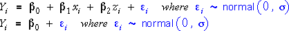
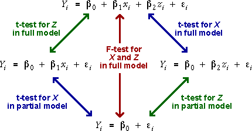
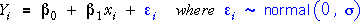
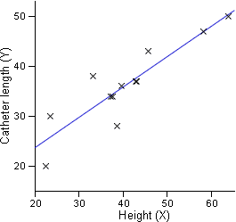

Adding the two variables sequentially
In the previous section, we used an F test to compare the full regression model involving both X and Z, and a 'regression model' with no explanatory variables.

There is an alternative to this 'all-or-nothing' test for both explanatory variables simultaneously. There are two different ways that the explanatory variables can be added sequentially to the regression model with no explanatory variables.

The two possibilities are adding the variables in the order:
Whatever the order,
Each additional variable gives the model more flexibility and allows the regression plane to fit closer to the data.
Heart catheter length
In heart catheterisation, a catheter is passed through a major vein or artery from the leg into the heart. X-rays are used to position the tip of the catheter. Should surgeons estimate the length (cm) of catheter that will be required from the height (in) of children, their weight (lb), or both? Catheter length (cm), height (in) and weight (lb) were recorded from 12 children.
Initially the least squares fit of a model involving no explanatory variables is shown. The plane simply predicts the catheter length to be the sample mean catheter length from the 12 children and is the same whatever the values of the explanatory variables. (Click the y-x and y-z rotation buttons to verify this.)
Use the checkboxes to check that any time a variable is added to the model, the plane gets closer to the data points. (More precisely, the residual sum of squares reduces.)
Representation of models with only one explanatory variable
The least squares fit of a regression model with only a single explanatory variable, such as

corresponds to a straight line on a 2-dimensional scatterplot of the data.

This least squares line also corresponds to a plane in a 3-dimensional scatterplot of x, y and z with z-slope equal to zero.
Heart catheter length
Select only the check-box for Height in the diagram above to show the least squares fit for the model with only the explanatory variable Height. Click the y-x rotation button to verify that this appears as a straight line in the 2-dimensional scatterplot of Catheter length against Height, then click the y-x-z rotation button to show it as a plane in the 3-dimensional scatterplot.
Similarly investigate the model with only explanatory variable Weight.